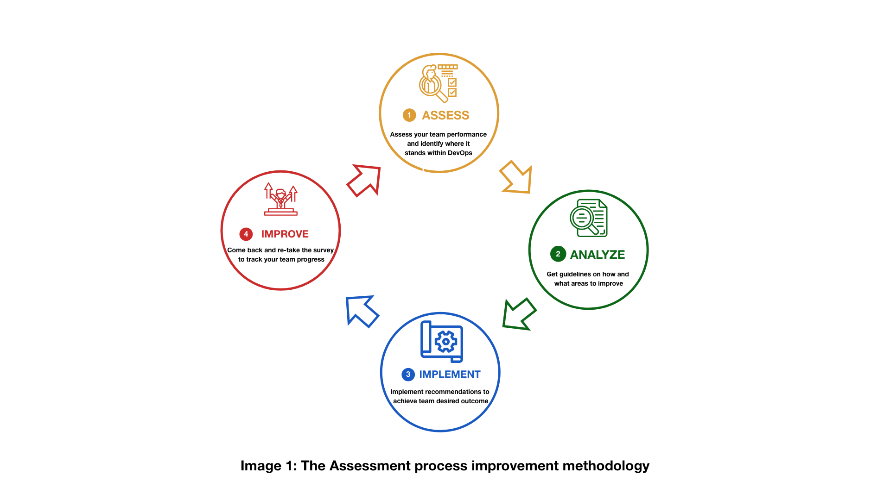
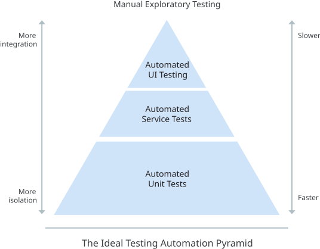

Capabilities Assessment Tool
The following survey is based on the State of DevOps Report that has been published annually since 2014, as part of the DevOps Research and Assessment (DORA). This six-year research program has validated a number of technical, process, measurement, and cultural capabilities to drive higher software delivery and organizational performance. The survey questions will measure and support the Continuous Improvement of these capabilities in IITB and ESDC. Teams are invited to complete the survey every 6 (six) to 12 (twelve) months to measure the success of their activities. The survey has 6 question types that will be repeated throughout the exercise to gather the appropriate information. The question types can be found below. For consideration by the team. The survey is modular and you have the option to complete one or more capabilities (sections). Please note that the IT Strategy team recommends that teams complete all capabilities at least once to establish a full baseline.
Table of Content
- WHAT IS AN ASSESSMENT TOOL
- SURVEY QUESTIONS AND RECOMMENDATIONS
- SECTION 1. VERSION CONTROL AND CODE MAINTAINABILITY
- SECTION 1. Recommendations
- SECTION 2. CONTINUOUS INTEGRATION AND DEPLOYMENT
- SECTION 2. Recommendations
- SECTION 3. CONTINUOUS TESTING
- SECTION 3. Recommendations
- SECTION 4. ARCHITECTURE
- SECTION 4. Recommendations
- SECTION 5. CLOUD INFRASTRUCTURE
- SECTION 5. Recommendations
- SECTION 6. TEAM EXPERIMENTATION AND STREAMLINING CHANGE APPROVAL
- SECTION 6. Recommendations
- SECTION 7. CUSTOMER FEEDBACK AND WORK VISIBILITY
- SECTION 7. Recommendations
- Section 8. DATA APPLICATION MONITORING
- Section 8. Recommendations
- Section 9. WORK IN PROCESS LIMITS AND VISUAL MANAGEMENT
- Section 9. Recommendations
- Section 10. LEARNING AND GENERATIVE CULTURE
- Section 10. Recommendations
- Section 11. TRANSFORMATION AND TRANSFORMATIONAL LEADERSHIP
- Section 11. Recommendations
WHAT IS AN ASSESSMENT TOOL
An Assessment tool is a roadmap that helps to prospect self-improvement, uncover team challenges and opportunities through capabilities, identifies priorities and tracks the progress. It is easy to use and produce credible results. The tool provides the ability to review team performance and guide to achieve a desired outcome. It is a tool to drive technology performance improvement in the organization. The Assessment tool is a survey that will help to measure team performance, understand strength and give recommendations on areas of improvement. It does not collect any data and the responses stay anonymous. The tool will show the areas where the competencies of your team do not reach the level required to reach team goals. When gaps do not get addressed, they tend to get bigger, eventually causing teams to collapse. Provided recommendations for each section will fill the gaps in your team that allows them to grow and reach required goals. Received score and recommendations can be saved by a user in order to come back and take the survey again. When you compare the competencies defined in the first assessment to the results you received in the second, you will find how your team performance progressed. The process can be repeated until desired outcomes of team performance achieved.
What is the problem and solution
To manage today business environment challenges organizations need the ability to deliver software with speed and stability. It will help to improve technology and organizational performance.
Who is it for
All teams in IITB looking to continuously improve themselves and support the improvement efforts of their peers.
What is the purpose of the Assessment tool
Based on the analysis of the answers, IT teams within the organization can see whether it is moving in the right direction. DevOps assessment tool helps to better understand strengths and needs, outline current maturity and identify a road map of improvement area. For better outcomes use this path for continuous integration and delivery:

Assessment tool process
Our process includes:
- Invitation to take a survey
- Choose a topic to self-assess
- Take a survey on selected section
- Receive score (Beginner, Intermediate, Advanced)
- Read recommendation on how to improve
- Implement recommendations
- Come back and re-take the survey to see the progress
![A graphic with 11 elements demonstrating assessment process flow.
It expands from left to right.
The first element is an envelop icon with the text "IT teams receive a link to take an advantage of the assessment tool" connected to a surveyor filling out a survey icon with the text "Survey taking" which is connected next to a paper with check marks icon represented as a survey with the text "Scoring based on responses".
The survey icon is connected to 3 circles.
The circle titles are: top "High 90-100%" which is connected to thumps up icon with text "Your team is doing well! Keep going!"; middle "Medium 50-89%" which is connected to the icon with a box and two arrows above with the text "There is a room for your team to improve"; bottom: "Low 0-49%" which is connected to an icon with two boxes with a space between and arrow down above the space with the text "Fill your team performance gaps with new learning opportunities".
The last two circles with the title "Low" and "Medium" with the following icons are connected to the icon with the paper and magnifying glass on it.
This icon has a text "Recommendations on where and how to improve".
At the end, all of three circles with following icons are connected to a floppy disk icon with the text "Save results".](assets/images/assessment_tool_process.png)
Survey questions
Questions cover User Research, Development, Testing, Automation, Deployment, Management and Monitoring, which are all part of any product development cycle. The survey includes questions mostly about team experimentation, visibility of work, visual management and monitoring, learning culture and continuous improvement. It has 11 sections, each of them will take approximately 10-15 minutes to answer. A user can be assessed on any section of the choice and get the results immediately. Please note that the IT Strategy team recommends that teams complete all sections at least once to establish a full baseline.
Question Types
Do you agree with… [1-7]
- Strongly Disagree
- .
- .
- Neither Agree nor Disagree
- .
- .
- Strongly Agree
Scoring
Each survey section will provide a score which will help you to get an idea of where you and your team is and where your team can be on DevOps journey.
Average of “Do you agree with” questions
- Low: 1-3
- Medium: 4-5
- High: 6-7
When complete, the assessment results are immediately available on the page followed by recommendations.
Recommendations
To achieve goals of efficient cooperation, collaboration, and bug-free code each section provides recommendations on how to improve and what actions to take.
Alignment
Supporting quotes
SURVEY QUESTIONS AND RECOMMENDATIONS
Section 1. VERSION CONTROL AND CODE MAINTAINABILITY
Description: Learn how to implement better version control practices for reproducibility and traceability. Make it easy for developers to find, reuse, and change code, and keep dependencies up-to-date.
Please rate how strongly you agree or disagree with the following statements. For the primary application or service my team works on:
- We can recover application code from the version control system.
- We can reconfigure systems from files in the version control system.
- It is easy to change code maintained by other teams if we need to.
- It is easy to find examples in our codebase.
- It is easy to reuse other people’s code.
- It is easy to add new dependencies to a project.
- It is easy to migrate to a new version of a dependency.
- Dependencies are stable and rarely break our code.
Recommendations
This excerpt from to the DORA DevOps capabilities guides indicates that the following practices can improve the version control:
- Ensure that every commit to version control triggers the automated creation of packages that can be deployed to any environment using only information in version control.
- Make it possible to create production-like test environments on demand using only scripts and configuration information from version control, and to create packages using the automated process described in the previous approach.
- Script testing and production infrastructure so that teams can add capacity or recover from disasters in a fully automated fashion.
Learn more about Version Control
Based on the DORA DevOps capabilities guides, the following practices can improve the code maintainability:
- Team collaboration. Teams need to access and recommend changes to each other. This helps transfer of knowledge and unblocks teams to make changes to other parts of the codebases.
- Traceability. It is essential to rapidly trace packages or deployments to its version in the event of an incident. This is crucial to make change to any changes to debug problems triggered by a dependency in the codebase.
- Code quality. Run cross-team code maintenance to improve internal quality and reduce people to refactor the codes. This requires making changes to multiple parts of the codebase.
Learn more about Code Maintainability
Section 2. CONTINUOUS INTEGRATION AND DEPLOYMENT
Description: Learn about common mistakes, ways to measure, and how to improve on your continuous integration efforts. Best practices and approaches for deployment automation and reducing manual intervention in the release process.
Please rate how strongly you agree or disagree with the following statements. For the primary application or service my team works on:
- Code commits result in an automated build of the software.
- Code commits result in a series of automated tests being run.
- Automated builds and tests are executed successfully every day.
- Current builds are available to testers for exploratory testing.
- Developers get feedback from the acceptance and performance tests every day.
- Our software is in a deployable state throughout its lifecycle.
- My team prioritizes keeping the software deployable over working on new features.
- Fast feedback on the quality and deployability of the system is available to anyone on the team.
- When people get feedback that the system is not deployable (such as failing builds or tests), they make fixing these issues their highest priority.
- We can deploy our system to production, or to end users, at any time, on demand.
- Features undergo security review early in the design process.
- Security reviews do not slow down the development cycle.
- Security requirements are included in the automated testing process.
Recommendations
Based on the DORA DevOps capabilities guides, the following practices can improve the Continuous Integration:
- Automated Build Process. Having automated scripts that has the ability to create packages and be deployed in any environment. The CI packages built must be authoritative and used in downstream processes. The builds should also be run daily as well as numbered and repeatable.
- A suite of automated tests. To ensure the reliability the high-value functionality of your system, start writing a set of unit and acceptance test (if not done). This will guide to identify the issue if the test fail and to ensure all new functionality will not cause serious problems with the system.The tests should be rapidly done run daily.
- System run the build and automated tests. The system status of the tests should be visible to the team. Avoid the use of email notification. Chat systems are a more popular way to notify the team.
Learn more about Continuous Integration
Based on the DORA DevOps capabilities guides, to improve the deployment automation, teams should document existing deployment processes and incrementality simplify and automate them.
The following actions are required for this approach:
- Packaging code in ways suitable for deployment.
- Creating pre-configured virtual machine images or containers.
- Automating the deployment and configuration of middleware.
- Copying packages or files into the production environment.
- Restarting servers, applications, or services.
- Generating configuration files from templates.
- Running automated deployment tests to make sure the system is working and correctly configured.
- Running testing procedures.
- Scripting and automating database migrations.
Learn more about Deployment Automation
This excerpt from to the DORA DevOps capabilities guides indicates that the following practices can improve the Security quality:
- Conduct security reviews. Conduct a security review for all major features while ensuring that the security review process doesn’t slow down development.
- Build preapproved code. Have the InfoSec team build preapproved, easy-to-consume libraries, packages, toolchains, and processes for developers and IT operations to use in their work.
- Integrate security review into every phase. Integrate InfoSec into the daily work of the entire software delivery lifecycle. This includes having the InfoSec team provide input during the design of the application, attending software demos, and providing feedback during demos.
- Test for security. Test security requirements as a part of the automated testing process including areas where preapproved code should be used.
- Invite InfoSec to demos. If you include the InfoSec team in your application demos, they can spot security-related weaknesses early, which gives the team ample time to fix.
Learn more about Security Quality
Section 3. CONTINUOUS TESTING
Description: Improve software quality by building reliable automated test suits and performing all kinds of testing throughout the software delivery lifecycle. Make deploying software a reliable, low-risk process that can be performed on demand at any time.
Please rate how strongly you agree or disagree with the following statements. For the primary application or service my team works on:
- Developers primarily create and maintain acceptance tests.
- When the automated tests pass, we are confident the software is releasable.
- Test failures are likely to indicate a real defect.
- It is easy for developers to fix acceptance test failures.
- Developers use their own development environment to reproduce acceptance failures.
- Automated tests are seamlessly integrated into our software delivery tech bricks.
- We continuously review and improve our test suite to better find defects and keep complexity and cost under control.
- Testers work alongside developers throughout the software development and delivery process.
- Manual test activities such as exploratory testing, usability testing, and acceptance testing are performed continuously throughout the delivery process.
- Developers practice test-driven development by writing unit tests before writing production code for all changes to the codebase.
- Adequate test data is available to run full automated test suites.
- Test data can be acquired on demand.
- Test data does not limit or constrain the automated tests that we can run.
Recommendations
Based on the DORA DevOps capabilities guides, the following concepts can improve the quality of evaluating the functionality and architecture of the system, it’s important to consider the organizational and technical components:
Organizational
- Allow testers to work alongside developers throughout the software development and delivery process.
- Perform manual test activities such as exploratory testing, usability testing, and acceptance testing throughout the delivery process.
Technical
Building and maintaining a set of key automated test suites such as Units Tests and acceptance tests. If you have limited test automation, start building a skeleton deployment pipeline which includes:
- Single unit test
- Single acceptance test
- Automated deployments scripts for a exploratory test environments
- Increase test coverage and extend the deployments product as the product or service evolves
It is also recommended to write your unit tests before writing code to improve the code are testable and the tests are maintainable.
Finally, you can write a small number of acceptance tests for the high-value functionality.
Make sure you require developers to write unit and acceptance tests for any new functionality, and any functionality you are changing.
Learn more about Continuous Testing
This excerpt from to the DORA DevOps capabilities guides indicates that the following practices can effectively and efficiently improve the Test Data Management:
- Favor unit tests. Unit tests should be independent of each other and any other part of the system except the code being tested. Unit tests should not depend on external data. As defined by the test automation pyramid, unit tests should make up the majority of your tests. Well-written unit tests that run against a well-designed codebase are much easier to triage and cheaper to maintain than higher-level tests. Increasing the coverage of your unit tests can help minimize your reliance on higher-level tests that consume external data.

- Minimize reliance on test data. Test data requires careful and ongoing maintenance. As your APIs and interfaces evolve, you must update or re-create related test data. This process represents a cost that can negatively impact team velocity. Hence, it’s good practice to minimize the amount of test data needed to run automated tests.
- Isolate your test data. Run your tests in well-defined environments with controlled inputs and expected outputs that can be compared to actual outputs. Make sure that data consumed by a particular test is explicitly associated with that test, and isn’t modified by other tests or processes. Wherever possible, your tests should create the necessary state themselves as part of setup, using the application’s APIs. Isolating your test data is also a prerequisite for tests to run in parallel.
- Minimize reliance on test data stored in databases. Maintaining test data stored in databases can be particularly challenging for the following reasons:
- Poor test isolation. Databases store data durably; any changes to the data will persist across tests unless explicitly reset. Less reliable test inputs make test isolation more difficult, and can prevent parallelization.
- Performance impact. Speed of execution is a key requirement for automated tests. Interacting with a database is typically slower and more cumbersome than interacting with locally stored data. Favor in-memory databases where appropriate.
- Make test data readily available. Running tests against a copy of a full production database introduces risk. It can be challenging and slow to get the data refreshed. As a result, the data can become out of date. Production data can also contain sensitive information. Instead, identify relevant sections of data that the tests require. Export these sections regularly and make them easily available to tests.
Learn more about Test Data Management
Section 4. ARCHITECTURE
Description: Learn about moving from a tightly coupled architecture to service-oriented and micro service architectures without re-architecting everything at once. Empower teams to make informed decisions on tools and technologies. Learn how these decisions drive more effective software delivery.
Please rate how strongly you agree or disagree with the following statements. For the primary application or service my team works on:
- We can make large-scale changes to the design of our system without the permission of somebody outside the team or creating significant work for other teams.
- To complete our work, we do not need to communicate and coordinate with people outside the team.
- We can deploy and release our product or service on demand, independently of other services it depends upon.
- We can do most of our testing on demand, without requiring an integrated test environment.
- We perform deployments during normal business hours with negligible downtime.
- My team feels that we are empowered to choose tools.
- My team proactively investigates new tools for new projects.
Recommendations
Based on the DORA DevOps capabilities guides, the following recommendations can improve the developer productivity, deployment outcomes and overall architecture:
- Evolutionary architecture. An iterative approach to improving the design of your enterprise system. This will lead successful products and services to re-architect during their lifecycle due to the changing requirements placed on them.
Before transforming a functionality into a service, they need to consist of the traits below:
- Implements a single business function or capability.
- Performs its function with minimal interaction with other services.
- Is built, scaled, and deployed independently from other services.
- Interacts with other services by using lightweight communication methods, for example, a message bus or HTTP endpoints.
- Can be implemented with different tools, programming languages, data stores, and so on
Learn more about Architecture
The following excerpt from the DORA DevOps capabilities guides provides recommendations to make sure the team is empowered to make tool and technology decisions:
- Periodically assess the tech stack. During assessments, encourage team members to critically evaluate how well the current tools address requirements. Additionally, during these reviews, discuss issues with the existing tools and potential new tool experimentation can be discussed and planned.
- Proactively investigate new tools for new projects. Have members of the teams think about and experiment with new tools to determine whether those tools are worth supporting. Try implementing a key piece of the new system using both existing and proposed technologies to see whether the expected benefits materialize. When you select technologies, have a good understanding of the costs associated with the technology. These might include licensing, support, and the infrastructure required to run the tools. You might also need to hire more people to help with adopting and maintaining the technology.
- Schedule time to experiment with new tools. Periodically, hold sessions (such as hackathons) where teams can play around with new projects and new technologies. Not all tools will be kept as a result of these experiments. But the important point is that you’re easing these new technologies into your stack or decide they aren’t appropriate.
- Hold regular presentations to discuss new tools. Sponsor organized meetings (such as lunch meetings) where new tech is presented and discussed. They can be informal meetings where one person does a presentation about a project they are working on in a new tech, or something they are investigating. Informal meetings like these are a good way for the group to talk about new technologies and stay up to date. A good approach is to rotate the presentations, with team members taking turns presenting Or you can invite people from other teams or someone from outside of the company to present. Including people from outside the organization can be particularly helpful, because if they have experience with a tool, they can discuss hidden costs and complexities that will only be apparent after longer-term use.
Learn more about Empowering teams to choose tools
Section 5. CLOUD INFRASTRUCTURE
Description: Find out how to manage cloud infrastructure effectively so you can achieve higher levels of agility, availability, and cost visibility.
Please rate how strongly you agree or disagree with the following statements. On my team:
- Once we have access, we can independently provision and configure the cloud resources and capabilities required for our product or service on demand without raising tickets or requiring human interaction.
- The service or product that we primarily work on is designed to be accessed from a broad range of devices (e.g. smartphones, tablets, laptops) over the network without the need for proprietary plug-ins or protocols.
- The cloud our product or service runs on serves multiple teams and applications, with compute and infrastructure resources dynamically assigned and re-assigned based on demand.
- We can dynamically increase or decrease the cloud resources available for the service or product that we primarily support based on demand.
- We can monitor or control the quantity and/or cost of cloud resources used by the service or product that we primarily support.
Recommendations
Based on the DORA DevOps capabilities guides,to achieve more rapid, reliable releases, and higher levels of availability, velocity, and reliability of the Cloud Infrastructure, the key actions below need to be considered:
- Close collaboration with developers, operations teams, information security, procurement, and finance. This will assist to identify and resolve any concerns or conflicts to substantial changes in adopting cloud-native processes and practices.
- Adopting Infrastructure-as-code .This allows Infrastructure configuration to run version control, and developers can provision environments, make configuration changes, and execute deployments through an automated mechanism. Additional, consider the requirements to be assessed such as the engineering effort and process change, including changing policies for implementing information security controls.
To learn more about Cloud Infrastructure
Section 6. TEAM EXPERIMENTATION AND STREAMLINING CHANGE APPROVAL
Description: Innovate faster by building empowered teams that can try out new ideas without approval from people outside the team. Replace heavyweight change-approval process with peer review, to get the benefits of a more reliable, compliant release process without sacrificing speed.
Please rate how strongly you agree or disagree with the following statements. On my team:
- We are able to work on new ideas and experiment.
- We are able to do work and make changes without having to ask for permission.
- We are able to make changes to user needs and specifications during a project.
- Changes can be promoted to production without manual change approvals.
- We have a clear understanding of the process to get changes approved for implementation.
- We are confident they can get changes through the approval process in a timely manner and knows the steps it takes to go from “submitted” to “accepted”.
- Tools and platforms are agreed upon and tailored to the needs of the project.
- We promote team development and handle cross-functional activities.
- We execute peer review which includes reviews, comments, and approvals captured as part of the development process.
- We consider the development platform as a product by evaluating the changes on multiple axes, including security, performance,and stability, as well as defects.
- We continuously improve business processes by identifying and eliminating bottlenecks.
Recommendations
The following excerpt of the DORA DevOps capabilities guides indicates that the following practices can improve your team experimentation:
- Hold regular hackathons. Hackathons are opportunities for the team to experiment and to work with and share ideas. They also have the added benefit of letting your team work with new technologies and tools.
- Encourage teams to iterate on and continually improve solutions to foster experimentation. Many times the first solution to a problem isn’t the best. Improvements to one service or feature often yield improvements in others.
- Allow developers and operators to talk to and observe customers. This kind of interaction provides more context and information that teams can use to solve problems and develop new ideas.
Learn more about Team experimentation
This excerpt of the DORA DevOps capabilities guides indicates that to improve your change approval processes, focus on implementing the following:
- Moving to a peer-review based process for individual changes, enforced at code check-in time, and supported by automated tests.
- Finding ways to discover problems such as regressions, performance problems, and security issues in an automated fashion as soon as possible after changes are committed.
- Performing ongoing analysis to detect and flag high risk changes early on so that they can be subjected to additional scrutiny.
- Looking at the change process end-to-end, identifying bottlenecks, and experimenting with ways to shift validations into the development platform.
- Implementing information security controls at the platform and infrastructure layer and in the development tool chain, rather than reviewing them manually as part of the software delivery process.
Learn more about Streamlining change approval
Section 7. CUSTOMER FEEDBACK AND WORK VISIBILITY
Description: Drive better organizational outcomes by gathering customer feedback and incorporating it into product and feature design. Understand and visualize the flow of work from idea to customer outcome in order to drive higher performance.
Please rate how strongly you agree or disagree with the following statements. On my team:
- We actively collect customer feedback on product and features quality.
- We establish key metrics on customer satisfaction before gathering information from the customers.
- After seeking customer feedback, we utilizes the response to understand the pain points and find solutions quickly.
- We are able to use value streams to gain insight and guide necessary improvements to ensure we have the bandwidth to support functionality and the documentation to put it into place.
- We focus on building, testing, and releasing code changes to an (production or testing) environment in small batches.
- Following production release, we are able to amplify feedback from users quickly using techniques (ex: AB testing) and enable short lead times faster.
- Feedback received is simple, easy to understand and provides actionable information.
- Our features are sliced in a way that lend themselves to frequent production releases.
- Our features are decomposed in a way that allows a developer to complete the work in a week or less.
- Our work is decomposed into features that allow for minimum viable products (MVP) and rapid development, rather than complex and lengthy processes (an MVP has just enough features to get validated learning about the product & its continued development).
Recommendations
Increased engagement with customers and participation in product management processes contributes to stronger identification with your organization’s goals and values.
Based on the DORA DevOps capabilities guides, a team should use the following pattern in order to maximize their chances of successfully solving customer problems:
- Gather customer feedback first, before defining any potential features.
- Validate that you’re solving a real problem.
- Iterate on a solution that actually solves that problem (and nothing more).
- Ensure the solution results in a viable business (for example, the cost is less than the anticipated revenue).
- Track key metrics to gauge success.
- Iterate through the above to improve those metrics.
Learn more about Customer feedback…
The following excerpt of the DORA DevOps capabilities guides proposes that to improve work visibility you should:
- Provide tools for visualizing and recording workflow. Start with making sure the team has visual management displays that show their work and its flow through the part of the value stream that is closest to them, including both the upstream and downstream parts of the process. Record how long it takes work to get through the process, and how often rework must be performed because the team didn’t get it right the first time. This will uncover your early and best opportunities for improvement at the team level.
- Create a value stream map. Work with other teams to perform a value-stream mapping exercise to discover how work flows from idea to customer outcome, and report the VSM metrics (lead time, process time, %C/A) for each process block. Have the team prepare a future-state value stream map and work to implement it.
- Share artifacts. Make sure the artifacts from these exercises are available to everyone in the organization, and that they are updated at least annually.
Learn more about Visibility of work in the value stream
Working in small batches is an essential principle in any discipline where feedback loops are important, or you want to learn quickly from your decisions. Research recommends that each feature or batch of work follow the agile concept:
- Independent. Make batches of work as independent as possible from other batches, so that teams can work on them in any order, and deploy and validate them independent of other batches of work.
- Negotiable. Each batch of work is iterable and can be renegotiated as feedback is received.
- Valuable. Discrete batches of work are usable and provide value to the stakeholders.
- Estimable. Enough information exists about the batches of work that you can easily estimate the scope.
- Small. During a sprint, you should be able to complete batches of work in small increments of time, meaning hours to a couple days.
- Testable. Each batch of work can be tested, monitored, and verified as working in the way users expect.
Learn more about Working in small batches…
Section 8. DATA APPLICATION MONITORING
Description: Improve monitoring across infrastructure platforms and the application tier, so you can provide fast feedback to developers. Learn how to build tooling to help you to understand and debug your production system.
How do you watch and understand your systems at work? Please rate how strongly you agree or disagree with the following statements. On my team:
- We have a solution in place to report on the overall health of systems (e.g, are my systems functioning? / do my systems have sufficient resources available?).
- We have a solution in place to report on system state as experienced by customers (e.g., “do my customers know if my system is down and have a bad experience?”).
- We have a solution in place for monitoring key business and systems metrics.
- We have tooling in place that can help us with understanding and debugging our systems in production.
- We have tooling in place that provides the ability to find information about things we did not previously know (e.g., we can identify “unknown unknowns”).
- We have access to tools and data which help us trace, understand, and diagnose infrastructure problems in our production environment, including interactions between services.
- Data from infrastructure and application performance monitoring tools is used to make business decisions.
- Monitoring gives rapid feedback which helps quickly find and fix problems early in the project lifecycle.
Recommendations
This excerpt from the DORA DevOps capabilities guides indicates that in order to improve team monitoring effectiveness, you should focus efforts on two main areas:
- Collecting data from key areas throughout the value chain. By analysing the data that you collect and doing a gap analysis, you can help ensure that you collect the right data for your organization.
- Using the collected data to make business decisions. The data that you collect should drive value across the organization, and the metrics that you select must be meaningful to your organization. Meaningful data can be used by many teams, from DevOps to Finance. It’s also important to find the right medium to display the monitoring information. Different uses for the information demand different presentation choices. Real-time dashboards might be most useful to the DevOps team, while regularly generated business reports might be useful for metrics measured over a longer period. The most important thing is to ensure the data is available, shared, and used to guide decisions. If the best you can do to kick things off is a shared spreadsheet, use that. Then graduate to fancy dashboards later. Don’t let perfect be the enemy of good enough.
Learn more about Monitoring systems to inform business decisions
Based on the DORA DevOps capabilities guides, to improve monitoring and observability, your teams should have the following:
- Reporting on the overall health of systems (Are my systems functioning? Do my systems have sufficient resources available?).
- Reporting on system state as experienced by customers (Do my customers know if my system is down and have a bad experience?).
- Monitoring for key business and systems metrics.
- Tooling to help you understand and debug your systems in production.
- Tooling to find information about things you did not previously know (that is, you can identify unknown unknowns).
- Access to tools and data that help trace, understand, and diagnose infrastructure problems in your production environment, including interactions between services.
Here are a few key measures to validate an effective implementation of monitoring and observability.
- Your monitoring should tell you what is broken and help you understand why, before too much damage is done.
- The key metric in the event of an outage or service degradation is time-to-restore (TTR).
- A key contributor to TTR is the ability to rapidly understand what broke and the quickest path to restoring service (which may not involve immediately remediating the underlying problems).
Learn more about Monitoring and observability
Section 9. WORK IN PROCESS LIMITS AND VISUAL MANAGEMENT
Description: Prioritize work, limit the amount of things that people are working on, and focus on getting a small number of high-priority tasks done. Learn about the principles of visual management to promote information sharing, get a common understanding of where the team is, and how to improve.
Please rate how strongly you agree or disagree with the following statements. On my team:
- We are good at limiting our work in process (WIP).
- We strive to limit our WIP, and have processes in place to do so.
- Our WIP limits lead to process improvement.
- We are not often assigned to work on multiple mutually exclusive tasks.
- When faced with too much work and too few people to do it, we prioritize work and focus on completing a small number of high-priority tasks.
- Our work is visible to other teams and stakeholders.
- We use up to date visual displays and dashboards to manage the work at various stages of a process.
- When looking at visual management displays we see the key process metrics the team cares about.
Recommendations
This excerpt from the DORA DevOps capabilities guides explains improve work in process limits when faced with too much work and too few people to do it:
- Make your work visible. As you do this, try to surface all of your work, making all of it visible, to several teams and stakeholders. (See visual displays for details).
- Set WIP limits that match your team’s capacity for work.
- Account for activities like production support, meeting time and technical debt.
- Don’t allow more WIP in any given part of the process than you have people to work on tasks.
- Don’t require people to split their time between multiple tasks.
- When a particular piece of work is completed, move the card representing that work to the next column, and pull the highest priority piece of work waiting in the queue.
- Set up a weekly meeting for stakeholders to prioritize all work in order. Let stakeholders know that if they don’t attend, their work won’t get done.
- Work to increase flow. Measure the lead time of work through the system. Record the date that work started on a card and the date work ended. From this information, you can create a running frequency histogram, which shows the number of days work takes to go through the system. This data will allow you to calculate the mean lead time, as well as variability, with the goal of having low variability: high variability means you are not scoping projects well or have significant constraints outside of your team. High variability also means your estimates and predictions about future work will not be as reliable.
- Improve work processes. Reduce hand-offs, simplify and automate tasks, and think about how to collaborate better to get work done. After you’ve removed some obstacles and things feel comfortable, reduce your WIP limits to reveal the next set of obstacles. The ideal is single-piece flow, which means that work flows from idea to customer with minimal wait time or rework. This ideal may not be achievable, but it acts as a “true north” to guide the way in a process of continuous improvement.
Learn more about Work in process limits…
This excerpt from the DORA DevOps capabilities guides explains that to improve effectiveness in visual management, systems must do the following:
- Reflect information that the team cares about and will act on. Having build monitors does no good if teams don’t care whether the display shows an issue (for example, showing that the build status is red, meaning broken), and won’t actually act on this information by swarming to fix the issue.
- Be easy to understand. It should be possible to tell at a glance from across the room whether something needs attention. If there is a problem, teams should know how to perform further diagnosis or fix the problem.
- Give the team information that is relevant to their work. While it’s important to collect as much data as possible about the team’s work, the display should present only data that is relevant to the team’s goals. In the face of information overload, particularly information that cannot be acted upon, people ignore visual management displays; the displays just become noise. The additional data can be accessed and used by the team when they are swarming to fix the problem.
- Be updated as part of daily work. If the team lets the data go stale or become inaccurate, they will ignore the visual displays, and the displays will no longer be a useful beacon when important issues arise. If displays are currently displaying stale or inaccurate data, investigate the cause: is the data not related to the team’s goals? What data would make the display an important and compelling information source for the team?
Learn more about Visual management capabilities…
Section 10. LEARNING AND GENERATIVE CULTURE
Description: Discover how growing a generative, high-trust culture drives better organizational and software delivery performance. Grow a learning culture and understand its impact on your organization performance.
Please rate how strongly you agree or disagree with the following statements as descriptive of your team and the organization:
- Learning is the key to improvement.
- Once we quit learning we endanger our future.
- Learning is viewed as an investment, not an expense.
- Their is a regular cadence of opportunities for employees to share their knowledge.
- Information is actively sought.
- Messengers are not punished when they deliver news of failures or other bad news.
- Responsibilities are shared.
- Cross-functional collaboration is encouraged and rewarded.
- Failures are treated primarily as opportunities to improve the system.
- Employees feel supported by each other and that their feedback is valued.
- Employees are given meaningful work that leverages their expertise.
- My team’s culture interacts with the broader organizational culture.
Recommendations
This excerpt from the DORA DevOps capabilities guides indicates that in order to improve employees job satisfaction, the following key actions should be taken:
- Give employees the tools and resources needed to do their work. Employees must have the tools necessary to get their work done, and teams that can decide which tools they use do better at continuous delivery. Teams that can choose their own tools make these choices based on how they work, and on the tasks they need to perform. No one knows better than practitioners what they need to be effective, so it’s not surprising that practitioner tool choice helps to drive better outcomes. Employees must also have the resources necessary to do their work. Those might be technical resources, such as access to servers or environments necessary to develop and test, or resources needed to learn and develop new skills, such as access to course materials and budget to attend trainings or technical conferences.
- Give employees meaningful work that leverages their expertise. The importance of meaningful work can’t be overstated. In some studies, employees have rated the importance of meaningful work just as highly as the importance of salary. Meaningful work makes a difference and is often very personal.
Learn more about Job satisfaction
This excerpt from the DORA DevOps capabilities guides suggests that in order to change the way people work, the following practices can be implemented to improve your organizational culture:
- High cooperation. Create cross-functional teams that include representatives from each functional area of the software delivery process (business analysts, developers, quality engineers, ops, security, and so on). This practice lets everyone share the responsibility for building, deploying, and maintaining a product. It’s also important that there is good cooperation within the team.
- Train the messengers. This means we want people to bring us bad news so we can make things better. Hold blameless post mortems. By removing blame, you remove fear; and by removing fear, you enable teams to surface problems and solve them more effectively. Also create and foster an environment where it is safe to take smart risks and fail, so that anyone can surface problems at any time—even without the ceremony of a post mortem.
- Share risks. Along with this, encourage shared responsibilities. Quality, availability, reliability and security are everyone’s job. One way to improve the quality of your services is to ensure that developers share responsibility for maintaining their code in production. The improvement in collaboration that comes from sharing responsibility inherently reduces risk: The more eyes on the software delivery process, the more you’ll avoid errors in process or planning. Automation also reduces risk, and with the right tool choice, can enable collaboration.
- Encourage bridging. Break down silos. In addition to creating cross-functional teams, techniques for breaking down silos include co-locating ops with the dev team; including ops in planning throughout the software delivery lifecycle; and implementing ChatOps. Another tip is to identify someone in the organization whose work you don’t understand (or whose work frustrates you, like procurement) and invite them to coffee or lunch. Informal discussions help foster better communication, and you may understand why they do what they do—and you can come up with creative solutions together.
- Let failure lead to inquiry. Again, hold blameless post mortems. The response to failure shapes the culture of an organization. Blaming individuals for failures creates a negative culture. If instead, failures lead you to ask questions about what caused the failures and how you can keep them from happening again in the future, you’ve improved your technical system, your processes, and your culture.
- Implement novelty. Encourage experimentation. Giving employees freedom to explore new ideas can lead to great outcomes. Some companies give engineers time each week for experimentation. Others host internal hack days or mini-conferences to share ideas and collaborate. Many new features and products began this way. When you release your employees from habitual pathways and repetitive tasks, they can generate enormous value for your organization. And remember that novelty isn’t limited to new products and features. Also encourage and reward improvements in process and ideas that help foster collaboration.
Learn more about Westrum organizational culture
Continuing to build a climate for learning is directly related to how an organization encourages and invests in learning. This excerpt from the DORA DevOps capabilities guides presents some ways an organization can show that learning is important and necessary for growth:
- Have regular lunchtime meetings (“brown bags”) where one person presents about a project they are working on in a new tech, or something they are investigating. Rotate the presentations among team members and reward people for presenting.
- When people attend conferences, have them share the new ideas through presentations or trip reports. You can even host regular meetups or mini-conferences to increase networking and exposure to new technologies and ideas.
- Encourage people to get certifications or external trainings. You can help with this by covering costs of external trainings and forming study groups that are a part of normal work activity.
Learn more about Learning culture
Section 11. TRANSFORMATION AND TRANSFORMATIONAL LEADERSHIP
Description: Learn how effective leaders influence software delivery performance by driving the adoption of technical and product management capabilities.
Please rate how strongly you agree or disagree with the following statements as descriptive of your team and the organization:
- My team understands clearly the current/target conditions, up to 5 (five) years in the future, and produces outcomes that match up with the purpose of the organization.
- My team is running experiments on a daily basis to try to move toward the target conditions or key results.
- Leaders understand clearly where my team and the organization are going, and where they want the team to be in five years.
- Leaders say positive things about my team and make employees proud to be a part of their organization.
- Leaders challenge team members to think about old problems in new ways and to rethink some of their basic assumptions about their work.
- Leaders behave in a manner which is thoughtful of my team member interests and personal needs.
Recommendations
Your organization can follow some general principles in order to increase your chances of success in transformational leadership. This excerpt from the DORA DevOps capabilities guides presents some key principles:
- Improvement work is never done. High-performing organizations are never satisfied with their performance and are always trying to get better at what they do. Improvement work is ongoing and baked into the daily work of teams. People in these organizations understand that failing to change is as risky as change, and they don’t use “that’s the way we’ve always done it” as a justification for resisting change. However that doesn’t mean taking an undisciplined approach to change. Change management should be performed in a scientific way in pursuit of a measurable team or organizational goal.
- Leaders and teams agree on and communicate measurable outcomes, and teams determine how to achieve them. It’s essential that everybody in the organization knows the measurable business and organizational outcomes that they are working towards. These outcomes should be short (a few sentences at most) at the organizational level, and match up clearly to the purpose and mission of the organization. At the level of an individual business unit, the outcomes should fit on a single page. The organizational outcomes should be decided by leaders and teams working together, although leaders have the ultimate authority. At lower levels of the organization, goals are stated in more detail and with shorter horizons.
- Large-scale change is achieved iteratively and incrementally. The annual budgeting cycle tends to drive organizations towards a project-based model in which work of all kinds is tied to expensive projects that take a long time to deliver. With few exceptions, it’s better to break work down into smaller pieces that can be delivered incrementally. Working in small batches delivers a host of benefits. The most important is that it lets organizations correct course based on what they discover. This avoids wasting time and money doing work that doesn’t deliver the expected benefits.
Learn more about Transformational leadership and How to transform